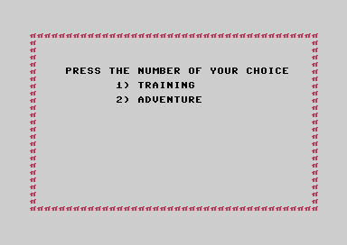

<meta charset="utf-8">
<meta name="viewport" content="width=device-width, initial-scale=1">
<title>Fist II: The Legend Continues</title>
<link rel="preconnect" href="https://fonts.googleapis.com">
<link rel="stylesheet" href="https://fonts.googleapis.com/css2?family=Lato:wght@400;700;900&family=IBM+Plex+Mono:wght@400;500&display=swap">
<link rel="stylesheet" href="reference/fist-page.css">
<!-- tabs -->
<header class="hero">
  <p class="eyebrow">Commodore 64 · 1986 · Beam Software</p>
  <h1>Fist II: The Legend Continues</h1>
  <p class="sub">The sequel to The Way of the Exploding Fist left the dojo: a karate fighter crosses a scrolling world of 123 screens (<code>$4A71</code>), fights whoever he meets, and hunts for eight scrolls (<code>$0405</code>).</p>
</header>
<main class="wrap">
  <section id="adventure">
    <p class="fig">01 · The adventure</p>
    <h2 class="t">Eight scrolls and a Warlord</h2>
    <p>A Warlord rules the land from a volcano. The masters of the Exploding Fist wrote their secrets on scrolls, hid them around the realm, and built meditation chambers where a warrior can grow stronger. The player walks through jungles, temples, caves and mountains, fights the Warlord's men one to one with the punches and kicks of the first game, finds the eight scrolls and takes each to its own chamber.<sup class="fn"><a href="about.html#src-1" title="The C64 manual">1</a></sup></p>
    <p>There is no dojo and no referee. The fighter carries one energy bar from screen to screen; it refills slowly between fights (<code>$2D14</code>), and meditating fills it and raises its limit (<code>$396F</code>). Each scroll brought home adds a life (<code>$2CCD</code>), and after a defeat the fighter starts again in the last chamber he visited (<code>$2D33</code>).</p>
    <figure class="shot"><figcaption>Where the adventure begins: the jungle, screen 94 of 123. Captured in an emulator from the copy studied here.</figcaption></figure>
    <p class="overview-links"><a href="gameplay.html">How to play</a><a href="music.html">Hear the music</a><a href="discoveries.html">Read the discoveries</a></p>
  </section>
  <section id="release">
    <p class="fig">02 · The release</p>
    <h2 class="t">Beam Software's sequel</h2>
    <p>Beam Software made the game in 1986. Melbourne House published it in Britain as <i>Fist II: The Legend Continues</i>, and Mindscape in the United States as <i>Fist: The Legend Continues</i>.<sup class="fn"><a href="about.html#src-7" title="archive.org, Lemon64 and the Finnish Retro Game Comparison Blog">7</a></sup> The manual credits Gregg Barnett with the game design and programming, Greg Holland with the backgrounds and scenery, Russel Comte with the character animations and sprites, Nigel Spence, Trevor Nuridin and Bruce Bayley with the "graphic arrangements", Neil Brennan with the music and Bruce Bayley with the sound effects. The backgrounds were drawn with David Johnston's "Character Editor" and laid out with Nigel Spencer's "Map Editor".<sup class="fn"><a href="about.html#src-1" title="The C64 manual">1</a></sup></p>
    <p>Barnett, Beam's Commodore expert,<sup class="fn"><a href="about.html#src-15" title="Helen Stuckey, PhD thesis, 2016">15</a></sup> had joined the studio in 1982,<sup class="fn"><a href="about.html#src-13" title="Interview with Gregg Barnett, Tsumea">13</a></sup> and his <i>Exploding Fist</i> had topped the UK chart for twelve weeks in 1985.<sup class="fn"><a href="about.html#src-11" title="Super Chart Island, The Way of the Exploding Fist">11</a></sup> For the sequel, he later told Retro Gamer, "it would have been easy to just reskin the original game ... change locations and dojos, add new opponents".<sup class="fn"><a href="about.html#src-10" title="Super Chart Island, Fist II">10</a></sup> Nigel Spencer, who programmed for Melbourne House from 1985, describes what was made instead: "the Exploding Fist fighting engine combined with a platform game".<sup class="fn"><a href="about.html#src-12" title="Interview with Nigel Spencer, C64.com">12</a></sup></p>
    <p>Besides the adventure, the manual describes a Tournament for one or two players, against "a series of computer opponents or a friend", for learning the moves.<sup class="fn"><a href="about.html#src-1" title="The C64 manual">1</a></sup></p>
    <p>Beam Software, a studio in Melbourne, made games for Melbourne House from the early 1980s. Its Commodore 64 games include the adventures <i>The Hobbit</i> and <i>Sherlock</i>, Gregg Barnett's first fighting game <i>The Way of the Exploding Fist</i> (1985), <i>Rock'n Wrestle</i> (1986), <i>Shadows of Mordor</i> (1987) and <i>Samurai Warrior: The Battles of Usagi Yojimbo</i> (1988).<sup class="fn"><a href="about.html#src-6" title="Wikipedia, Beam Software">6</a></sup></p>
  </section>
  <section id="reception">
    <p class="fig">03 · The reception</p>
    <h2 class="t">One week at number one</h2>
    <p>Fist II reached number one on the UK's combined formats chart for the week ending 18 October 1986, and stayed there one week.<sup class="fn"><a href="about.html#src-10" title="Super Chart Island, Fist II">10</a></sup> Commodore User's Ken McMahon expected it to be "the definitive Kung Fu classic" (November 1986), and Your Commodore found that "the idea of a quest rather than just straight combat works very well indeed" (January 1987). Zzap!64 was harder on it in December 1986: Julian Rignall thought it "looks unfinished and is completely overpriced", and Gary Penn called it "basically a big disappointment".<sup class="fn"><a href="about.html#src-10" title="Super Chart Island, Fist II">10</a></sup></p>
  </section>
  <section id="copy">
    <p class="fig">04 · The copy studied</p>
    <h2 class="t">A Mindscape disk, and the Adventure load</h2>
    <p>The copy is a Mindscape disk. It shows the Mindscape logo and asks for Training or Adventure; each has its own set of files. This site covers the Adventure. Its loader reads six files and moves some of them under the Commodore's input and output chips and its operating system ROM, until the game fills memory from <code>$0400</code> to <code>$FFF8</code>.</p>
    <div class="two">
      <figure class="shot" style="margin:0"><figcaption>The menu.</figcaption></figure>
      <figure class="shot" style="margin:0"><figcaption>The title picture, shown while the Adventure loads.</figcaption></figure>
    </div>
  </section>
</main>
